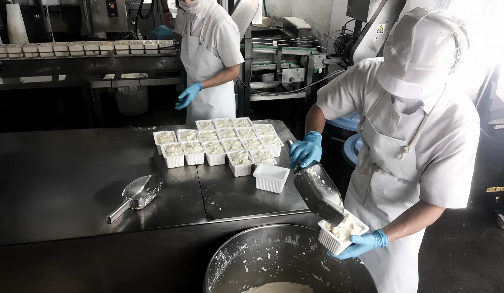
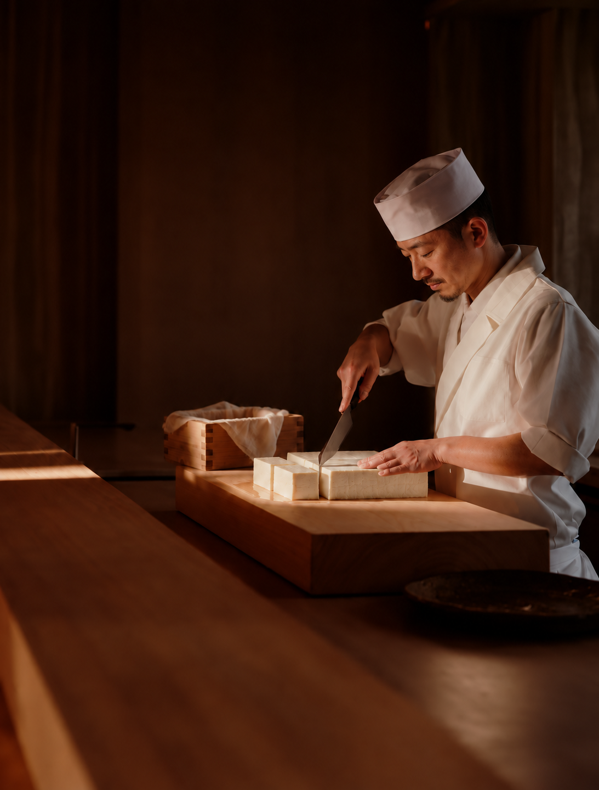

Retail & wholesale
Begin a conversation about range fit, intended channel and market requirements.

TRADITIONAL OKINAWAN TOFU
Made in Okinawa · Since 1958
FOR BUSINESS PARTNERS
Okinawan tofu
for your menu.
Explore our range for retail, food service and distribution.

OUR STORY
Since 1958, Kawakami Foods has made tofu in Okinawa with an emphasis on careful handling, dependable quality and the character of local food culture. In Okinawan kitchens, tofu is familiar everyday food—served simply, shared at the table and adapted across home and professional menus.
We welcome conversations with buyers, importers, wholesalers, retailers, restaurants and hotels exploring an Okinawan tofu range for Singapore.
Meet Kawakami FoodsOUR RANGE
Discover our tofu and okara range. Select a product for serving ideas, recipes and cooking times.
FOR SINGAPORE BUSINESSES
Bring the flavours of Okinawa to your shelves, menus and customers.
Begin a conversation about range fit, intended channel and market requirements.
Share your menu context, service format and expected timeline with our business team.
Discuss Singapore-market opportunities, proposed volumes and commercial next steps.
BUSINESS CONTACT
Tell us about your company, channel and product interest. These details help our team understand your enquiry.
Talk to us about product details, order quantities and delivery.